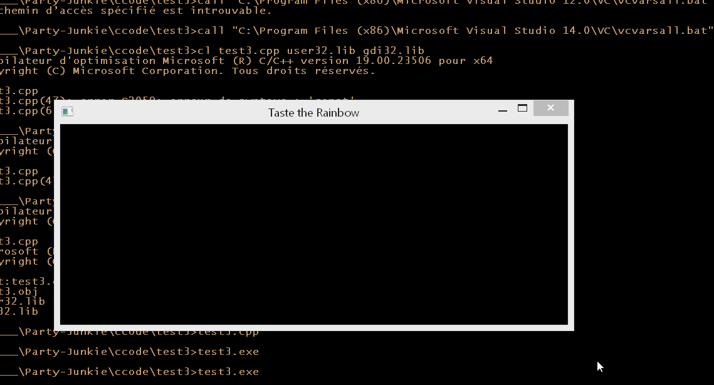

Backbuffer
Nous allons mettre un place un buffer (une zone de la mémoire)
que nous passerons à windows pour que windows l'affiche à l'écran.
Ce n'est pas la méthode la plus efficiente:
de nos jours, tout passe par la carte graphique.
Mais ce projet ayant pour but de montrer comment faire un
jeu depuis zero, je préfére montrer comment
implémenter cette partie. De plus, au moment
de rajouter l'utilisation du GPU, nous aurrons un zolie
boost de performance gratuite.
Donc, ça remonte au temps où nous n'avions pas
grand chose en termes de GPU. On écrivais tout
soi-même et la seule instruction donnée au GPU
était de rendre à l'écran ce buffer.
C'est basiquement ce qu'on va faire et c'est la premiére étape
pour comprendre comment un renderer (prononcé à l'anglaise)
(moteur graphique) fonctionne.
Quitter notre application?
Pour rajouter rapidement la fonction de fermeture à notre application,
nous aurions pour rajouter un appel à
PostQuitMessage
(avec 0 comme code de fermeture) lors du message WM_CLOSE & WM_DESTROY.
Mais ce n'est pas la façon dont on va le faire.
//SIDENOTE: Pour les gens ayant beaucoup d'expérience avec la POO,
arrêtez de vous tirer les cheveux. Vous allez finir chauve.
La POO impose une symétrie compléte du constructeur et du
destructeur pour l'allocation et la désalocation des ressources.
Ce que ça veux dire c'est qu'à chaque action que l'on fait,
si il y a une quelconque façon de netoyer ça, tu dois le faire.
Et qu'il faut faire ça même si il n'y a pas besoin de netoyer.
Vous pouvez penser que ce n'est pas grave. Mais ça l'est.
La POO force à penser les choses en termes d'individus, alors
qu'il faut penser les choses en tant que groupe, en tant que systeme.
Et ce que ça veux dire c'est l'"individu" va intéragir avec
d'autres indivius et que perdre du temps à nettoyer après chaque
individu est une perte de performance. Il est beaucoup
plus optimal de netoyer plusieurs individus en même temps (par
exemple).
Dans note cas, c'est windows qui fait ce grand nettoyage après
la fin de notre application.
Quitter notre application!
Pour gérer la fermeture de notre application,
on va utiliser une variable globale.
▄▄▄▄▄▄▄▄
▄▀ ▄ ▄ ▀▄
█ █ █ █
█ ▀ ▀ █▄
▀▄ ▄▄▄▄ ▄▀██▄
▀▄▄▄▄▄▄▄▄▀ ██▀
█ ███
█ █
▄▄█▄▄▄▄▄▄▄▀
█ █
█ █
▀ █
▄▀▀▀▄
█ █
█ █ Robert, développeur expérimenté.
Donc on va rajouter une ligne juste après les includes:
#include <windows.h>
//TODO(doc): this is a global for now
static bool Running;
LRESULT CALLBACK
MainWindowCallback(HWND Window,
UINT Message,
WPARAM WParam,
LPARAM LParam)
{
// ...............
//SIDENOTE(doc): static limite l'acessibilité d'une variable
au block dans lequel elle a été créee et ne la détruit pas
à la sortie du block (un block c'est tout ce qui est entre "{" et "}").
Lorque static est utilisé en dehors d'un block, il limite
l'acessibilité au fichier.
//SIDENOTE(doc): Je ne suis ni pour, ni contre les vaiables globales.
Mais si le dogme qui dit "Tu n'utilisera point de variables globales" existe,
c'est qu'il y a de très bonnes raisons.
L'une des choses que l'on va faire pour eviter de faire des erreurs,
on va eviter de faire du code qui "ne doit pas toucher des choses",
"toucher ses choses" (//TODO(doc): trouver de meilleurs termes ?).
Donc le plus clair on peut faire dans notre code pour indiquer
ce que l'on peut/ne peut pas acceder, le mieux c'est.
Et c'est dans cette optique là que les variables globales posent
un probléme: tout le monde peut la toucher, à n'importe quel moment.
Notre code Windows sera toujours un p'tit peu "sâle", car
on cherche à s'interfacer avec Windows. Windows qui
n'a pas été bien designé. Il n'a pas une bonne API.
Donc je serais un peu plus flexible/sâle dans le platform
layer. Sachant bien sûr que le plus gros du code ne sera
pas dans ce layer.
On va aussi modifier les messages WM_CLOSE & WM_DESTROY.
case WM_DESTROY:{
Running = false;
}break;
case WM_CLOSE:{
//TODO(doc): do the user really want to quit ?
Running = false;
}break;
Et modifier la boucle infinie pour qu'elle s'arête en fonction de Running.
// ........
if(WindowHandle)
{
Running = true;
MSG Message;
while(Running)
{
BOOL MessageResult = GetMessage(&Message,0,0,0);
if(MessageResult > 0)
{
TranslateMessage(&Message);
DispatchMessage(&Message);
}
else
{
break;
}
}
}
// .......
Si vous avez un peu regardé le code de la page précédente,
vous avez surement remarqué que l'on a déjà utilisé static.
Sachant que l'on utilise static la pluspart du temps
dans deux différents contextes, le plus souvent,
j'ajoute une macro pour les différencier:
#define local_persist static
#define global_variable static
#define internal static
J'ai dit deux, mais il y a aussi une troisiéme, qui est
l'utilisation de static sur une fonction. Cette fonction ne
pourra être utilisé que dans le fichier où elle a été définie.
Et maintenant notre fenétre se ferme !
GDI
Windows GDI est l'API graphique de windows.
Nous voulons faire le rendu graphique par nous même
donc nous allons utiliser Windows GDI le moins possible.
Concrétement, nous allons passer à GDI un bitmap déjà rendu
et lui demander de l'afficher à l'écan.
Pour faire ça, GDI nous impose d'utiliser une méthode pour allouer
un bitmap à notre place.
La bureaucratie ...
Pour nous simplifier un peu la tâche, nous allons utiliser des
variables globales (celà changera dans le futur).
global_variable BITMAPINFO BitmapInfo;
global_variable HBITMAP BitmapHandle;
global_variable HDC BitmapDeviceContext;
global_variable void * BitmapMemory;
"void *", est un pointeur pointant sur de la mémoire n'ayant pas de
type.
GetClientRect
qui retourne le rectangle ayant la taille de l'intérieur de la fenétre.
case WM_SIZE:{
RECT ClientRect;
GetClientRect(Window, &ClientRect);
int Height = ClientRect.bottom - ClientRect.top;
int Width = ClientRect.right - ClientRect.left;
Win32ResizeDIBSection(Width, Height);
}break;
case WM_PAINT:{
PAINTSTRUCT Paint;
HDC DeviceContext = BeginPaint(Window, &Paint);
int X = Paint.rcPaint.left;
int Y = Paint.rcPaint.top;
int Height = Paint.rcPaint.bottom - Paint.rcPaint.top;
int Width = Paint.rcPaint.right - Paint.rcPaint.left;
Win32UpdateWindow(DeviceContext, X, Y, Width, Height);
EndPaint(Window, &Paint);
}break;
internal void
Win32ResizeDIBSection(int Width, int Height)
{
if(BitmapHandle)
{
DeleteObject(BitmapHandle);
}
if(BitmapDeviceContext == 0)
{
BitmapDeviceContext = CreateCompatibleDC(0);
}
BitmapInfo.bmiHeader.biSize = sizeof(BitmapInfo.bmiHeader);
BitmapInfo.bmiHeader.biWidth = Width;
BitmapInfo.bmiHeader.biHeight = Height;
BitmapInfo.bmiHeader.biPlanes = 1;
BitmapInfo.bmiHeader.biBitCount = 32;
BitmapInfo.bmiHeader.biCompression = BI_RGB;
BitmapHandle = CreateDIBSection(
BitmapDeviceContext,
&BitmapInfo,
DIB_RGB_COLORS,
&BitmapMemory,
0,0);
}
internal void
Win32UpdateWindow(HDC DeviceContext,int X, int Y, int Width, int Height)
{
StretchDIBits(DeviceContext,
X,Y,Width,Height,
X,Y,Width,Height,
BitmapMemory,
&BitmapInfo,
DIB_RGB_COLORS,SRCCOPY);
}
test3.cpp
WM_SIZE
GetClientRect
https://msdn.microsoft.com/fr-fr/library/windows/desktop/dd183494(v=vs.85).aspx
https://msdn.microsoft.com/fr-fr/library/windows/desktop/dd145121(v=vs.85).aspx

Ca n'a peut-être pas l'air mais c'est bel et bien une progression.